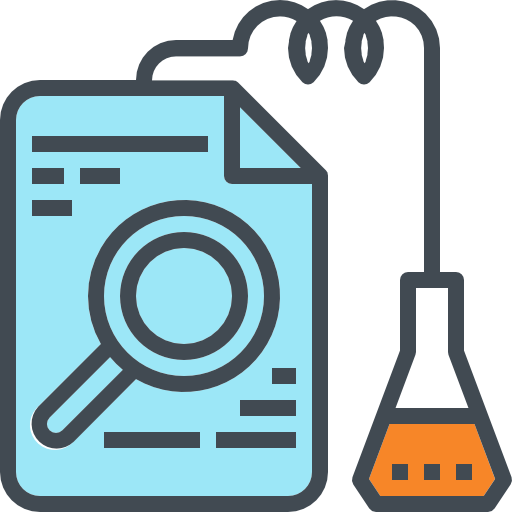

Managing Data Quality scales your analytical insights
A lot of organizations produce insights from their data to be used to determine the organisation's next steps. However when Data Quality remains unmanaged, we often notice some problems. Implementing a Data Quality Framework enables organizations to truly trust their insights based on transparant and comprehensible documentation.
Focussing on Data Quality Increases:

Operational Efficiency
Regulatory Compliance
Success rate of Data Innitiatives
Trust in reports
Reusability of data assets
Analytical possibilities
We help From Business Transformation to Technical Implementation
Quality Insights
Measure and track Data Quality issues and develop logical dashboards for DQ insights.
Solution Architecture & Roadmap
Strategic advise as to how and where to position your DQ initiative
Project Management
Strategic Advise and Project Management of Data Quality Initiatives.
Technical implementation
Technical capabilities to implement a Paremeter Driven, Tool Agnostic Data Quality Framework to serve your data initiative.
Remediation Strategy
Structuring DQ issues to the Dimensions and find ways to increase the Quality of your data within your organization
Data Validation
Set in stone processes to validate the data and increase the quality.
Data Enrichment
Enrich the data with internal or external sources
By leveraging our Data Quality Framework
Govern
Educate
Reuse
Analyze

Analyze and contextualize the data in a certain dataset.
Strategize
Classify the data quality issues, pinpoiint the problem and determine a cleansing strategy
Remediate

Improve the processes, Cleanse the data, Implement the solution.
Enable

Distribute the data and improve analytical insights
Monitor